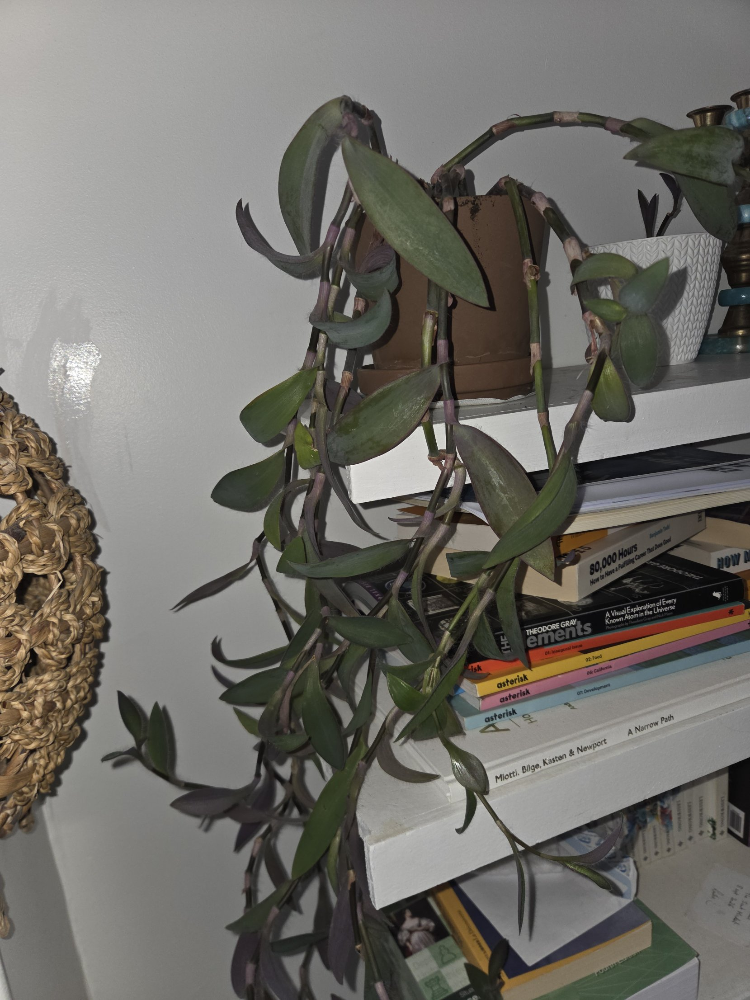

Feuilles qui verdissent, tiges longues et espacées
Cause probable : manque de lumière.
Que faire : la rapprocher progressivement d'une fenêtre ensoleillée (sud, est ou ouest), et pincer les tiges trop longues.
Misère pourpre. Facile.
Plus « plante de soleil » que sa cousine T. fluminensis : elle a besoin d'un peu de soleil direct pour rester violette, et supporte mieux la sécheresse que l'excès d'eau.

Ce sont les mêmes cases que sur la page d'accueil.
Ce navigateur n'enregistre pas les coches.
Cause probable : manque de lumière.
Que faire : la rapprocher progressivement d'une fenêtre ensoleillée (sud, est ou ouest), et pincer les tiges trop longues.
Cause probable : excès d'eau, qui affaiblit aussi les racines.
Que faire : laisser le substrat sécher visiblement avant d'arroser.